01ภาพรวม

สิ่งมีชีวิตที่เกิดมาเพื่อสู้ — ยิ่งรบยิ่งแข็งแกร่ง ยิ่งเชื่อยิ่งเป็นจริง
02ต้นกำเนิด
Orks ถูกสร้างขึ้นเมื่อกว่า 60 ล้านปีก่อนโดย Old Ones (ที่ Orks เรียกว่า 'Brain Boyz') เป็นอาวุธชีวภาพชื่อ Krork สำหรับสู้กับ Necrons ใน War in Heaven — Krork ตัวใหญ่และมีเทคโนโลยีสูงกว่า Orks ปัจจุบันมาก
ร่างกายเป็นส่วนผสมของสัตว์และเชื้อรา แพร่พันธุ์ด้วยสปอร์ ทำให้กำจัดให้หมดจากดาวแทบเป็นไปไม่ได้
03เนื้อเรื่องเจาะลึก
ทหารของ Old Ones
ในสงคราม War in Heaven เมื่อหลายล้านปีก่อน Old Ones สร้าง Krork เผ่าทหารเพื่อสู้กับ Necrons Orks ปัจจุบันคือลูกหลานที่เสื่อมถอยของ Krork จึงเกิดมาเพื่อสงครามโดยแท้
The Beast และ Prophet of the WAAAGH!
ในประวัติศาสตร์มี Ork Warlord หลายตัวที่เกือบทำลายจักรวรรดิ เช่น The Beast ใน M32 ที่บุกถึง Terra ปัจจุบัน Ghazghkull เดินทางไปทั่วกาแล็กซีเพื่อ "หาสงครามที่ดีที่สุด" ตามคำสั่งเทพ
04ยุค 30K — ในยุค Great Crusade และ Horus Heresy

ยุค 30K Orks เป็นศัตรูใหญ่ของ Great Crusade ชัยชนะครั้งใหญ่ที่สุดคือ Ullanor Crusade ที่ Horus สังหาร Overlord Urlakk Urg และทำลายอาณาจักร Ork ที่ใหญ่ที่สุดในยุคนั้น — จักรพรรดิแต่งตั้ง Horus เป็น Warmaster หลังชัยชนะนี้
ดูภาพรวมยุค 30K ทั้งหมดที่ เนื้อเรื่องยุค 30K และความต่างของสองยุคที่ เปรียบเทียบ 30K vs 40K
05นิสัยและวัฒนธรรม
- พลังจิตรวมของ Orks (สนาม 'Waaagh!') ทำให้สิ่งที่พวกเขาเชื่อกลายเป็นจริง — เช่น ยานสีแดงวิ่งเร็วกว่า
- ยิ่งตัวใหญ่ยิ่งเป็นใหญ่ — ผู้นำคือตัวที่ตัวใหญ่และแข็งแรงที่สุด
- แบ่งเป็น Klan เช่น Goffs, Evil Sunz, Bad Moons, Deathskulls, Blood Axes, Snakebites
- รู้วิธีสร้างเครื่องจักรโดยสัญชาตญาณ (Mekboy)
06จุดที่น่าสนใจ
- Waaagh!: การรวมพลังบุกครั้งใหญ่ ใหญ่พอจะกลืนทั้งเขตดาว
- เทพคู่ Gork (โหดแบบฉลาด) และ Mork (ฉลาดแบบโหด)
07ความสามารถพิเศษ
สิ่งที่ทำให้ Orks แตกต่างจากทัพอื่น — ทั้งพลังที่ติดตัวมาทั้งเผ่า/ทัพ และความสามารถของบุคคลสำคัญ
ของทั้งเผ่า/ทัพ
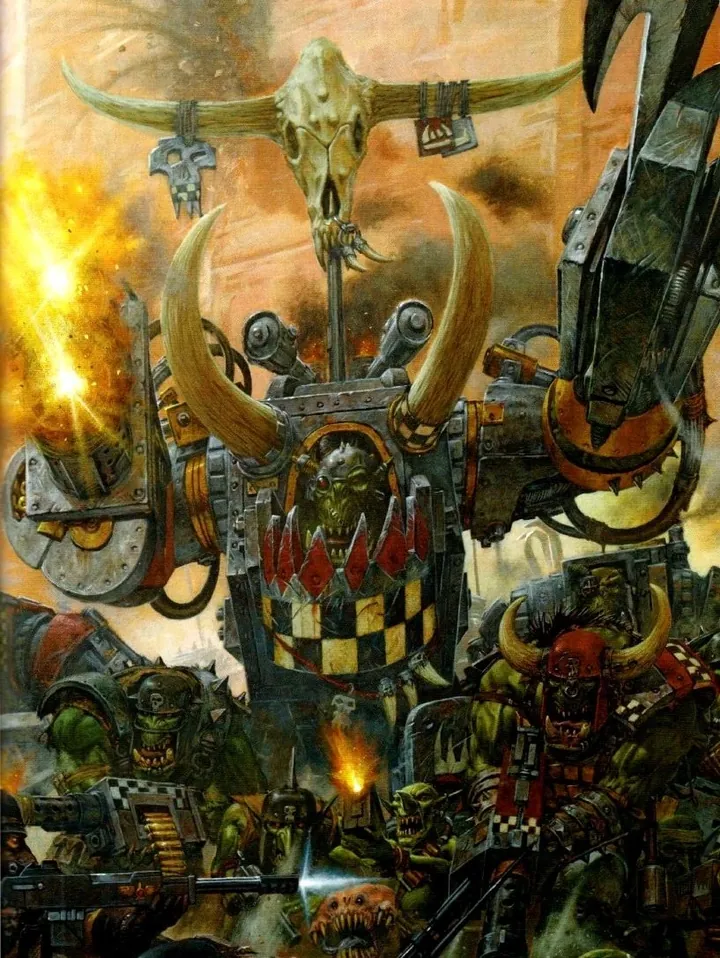
WAAAGH! — พลังแห่งความเชื่อ
Orks ทุกตัวปล่อยพลังจิตแฝง (WAAAGH! energy) ออกมาโดยไม่รู้ตัว เมื่ออยู่รวมกันมาก ความเชื่อร่วมกันทำให้สิ่งที่ไม่ควรทำงานได้ทำงาน — ปืนที่ต่อจากเศษเหล็กยิงได้เพราะพวกเขา "เชื่อว่ายิงได้" และรถที่ทาสีแดงวิ่งเร็วขึ้นจริงเพราะ "ของสีแดงวิ่งเร็วกว่า"
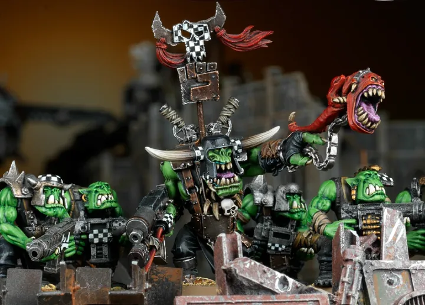
ยิ่งสู้ยิ่งตัวใหญ่
Ork เติบโตไม่หยุดตามชัยชนะและความก้าวร้าว Warboss จึงเป็นตัวที่ใหญ่ที่สุดเสมอ — อำนาจวัดจากขนาดตัว
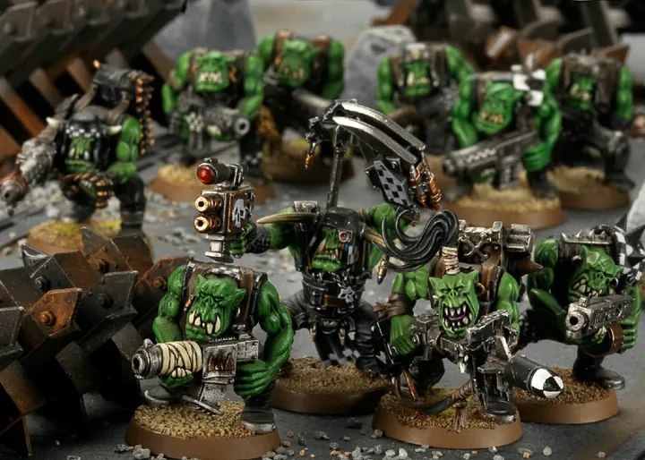
เกิดจากสปอร์ ฆ่าให้หมดยาก
Orks สืบพันธุ์ด้วยสปอร์ที่ปล่อยออกมาตลอดชีวิตและเมื่อตาย ดาวที่ถูก Ork บุกแม้กำจัดได้หมด หลายปีต่อมาก็จะมี Ork เกิดใหม่จากดิน
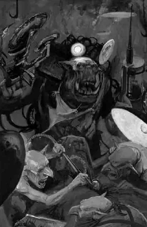
ร่างกายทนทานผิดธรรมชาติ
ทนบาดแผลที่ฆ่ามนุษย์ได้ ต่อแขนขาใหม่ได้ง่าย Painboy บางครั้งเย็บหัว Ork ใส่ร่างใหม่ก็ยังใช้ได้
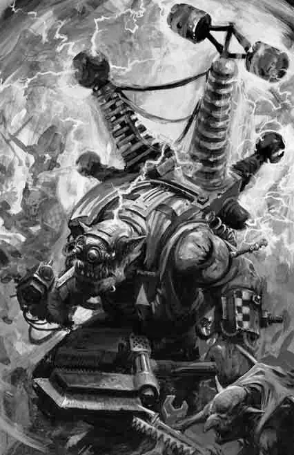
ความรู้ในพันธุกรรม
Oddboy เช่น Mekboy และ Painboy "รู้" วิธีสร้างเครื่องจักรหรือผ่าตัดตั้งแต่เกิด เพราะความรู้ถูกฝังในยีนตั้งแต่ยุคที่ Old Ones สร้างพวกเขาเป็นทหาร
ของบุคคลสำคัญ

Ghazghkull Mag Uruk Thraka
ผู้เผยพระวจนะแห่ง Gork และ MorkOrk ที่ถูกยิงหัวแล้ว Painboy ใส่แผ่นโลหะแทน หลังจากนั้นเขาอ้างว่าได้ยินเสียงเทพ Gork และ Mork นำ WAAAGH! บุก Armageddon หลายครั้ง และเป็น Ork ที่อันตรายที่สุดในประวัติศาสตร์

Mad Dok Grotsnik
หมอบ้าPainboy ที่ผ่าตัดแบบบ้าคลั่ง เป็นคนใส่แผ่นเหล็กในหัว Ghazghkull ร่างของตัวเองก็ถูกดัดแปลงไปมาก

Snikrot
ผีแห่งความมืดKommando ที่ซ่อนในอุโมงค์และความมืดบน Armageddon ทหารมนุษย์เล่าลือว่าเป็นปีศาจ
08หน่วยและบทบาทในกองทัพ
Orks ถูกสร้างมาเพื่อทำสงคราม และความรู้ถูกฝังในพันธุกรรม — Ork บางตัว "รู้" วิธีสร้างปืนหรือผ่าตัดโดยไม่ต้องเรียน เรียกว่า Oddboy ซึ่งมีทั้ง "หมอ" (Painboy) "ช่าง" (Mekboy) และหมอผี (Weirdboy)
Warboss
วอร์บอสOrk ที่ใหญ่และแข็งแกร่งที่สุดในเผ่า ยิ่งชนะมากก็ยิ่งตัวโต — ถ้าใหญ่พอจะกลายเป็น Warlord นำ WAAAGH! ทั้งกาแล็กซี เช่น Ghazghkull
Painboy
เพนบอย"หมอ" ของ Orks — ผ่าตัดแบบสะเปะสะปะ เปลี่ยนแขนขา เย็บหัวใส่ร่างใหม่ด้วยความรู้ที่ฝังในพันธุกรรม ผลลัพธ์บางครั้งดีบางครั้งแปลก เช่น Mad Dok Grotsnik
Mekboy / Big Mek
เมคบอย / บิ๊กเมค"ช่าง" ของ Orks สร้างปืน รถ และหุ่นยนต์จากเศษเหล็ก ใช้งานได้จริงเพราะ Orks "เชื่อ" ว่ามันใช้ได้
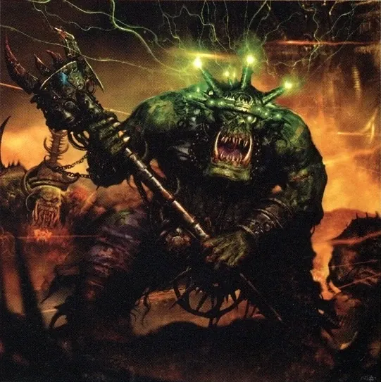
Weirdboy
เวียร์ดบอยOrk ผู้ใช้พลังจิต ดูดพลังจิตของ Orks รอบตัว (WAAAGH! energy) แล้วยิงออกมา — ถ้าเก็บไว้นานหัวจะระเบิด
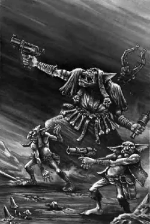
Runtherd
รันเฮิร์ดOrk ที่ดูแลและเฆี่ยนตี Gretchin และ Snotling ให้ทำงาน
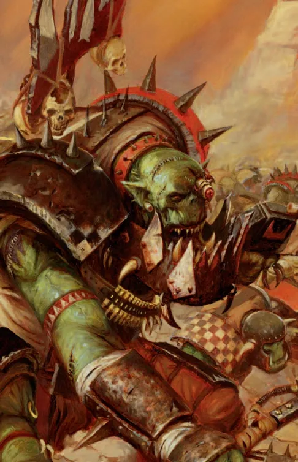
Nobz
น็อบซ์Ork ตัวใหญ่ที่เป็นหัวหน้ากลุ่ม คอยรักษาระเบียบด้วยการต่อย
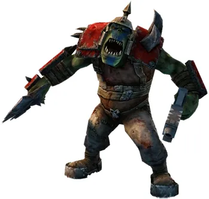
Boyz
บอยซ์ทหาร Ork ทั่วไปที่บุกเป็นฝูงใหญ่ ยิ่งจำนวนมากยิ่งกล้า
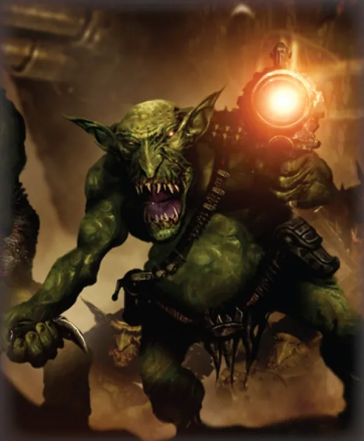
Gretchin
เกรตชินOrk ตัวเล็กขี้ขลาดที่ถูกใช้ทำงานทุกอย่าง และเป็นโล่มนุษย์
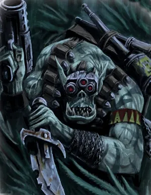
Kommandos
คอมมานโดOrk ที่เจ้าเล่ห์ผิดปกติ ชอบซุ่มโจมตีแทนการบุกตรง ๆ
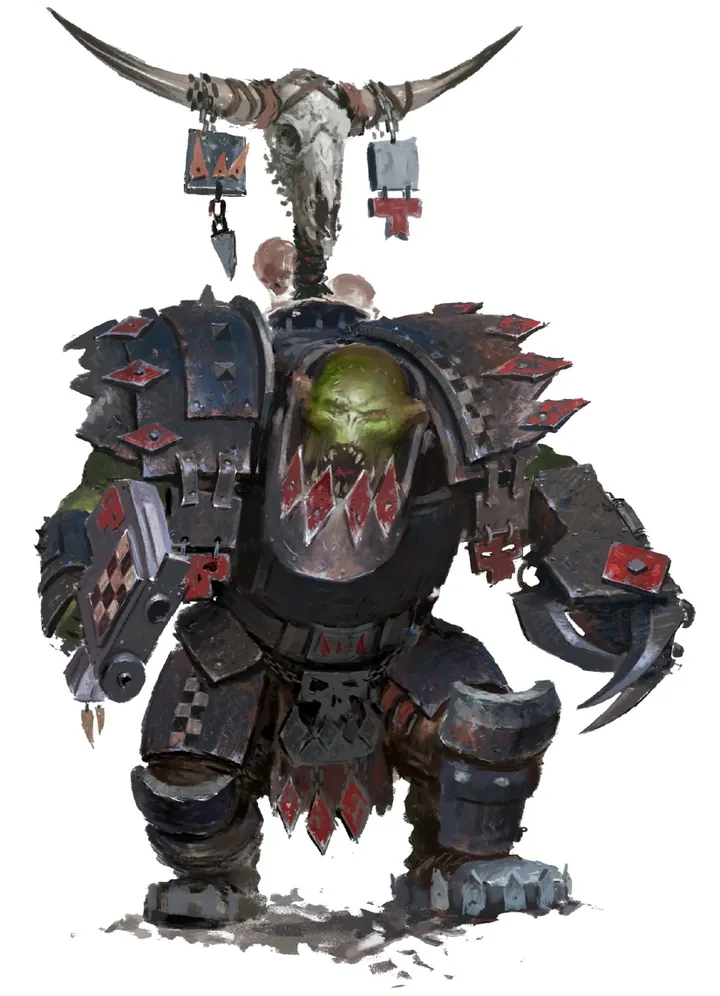
Meganobz
เมกาน็อบซ์Nobz ในชุดเกราะหนักที่ Mekboy ทำให้ เทียบเท่า Terminator
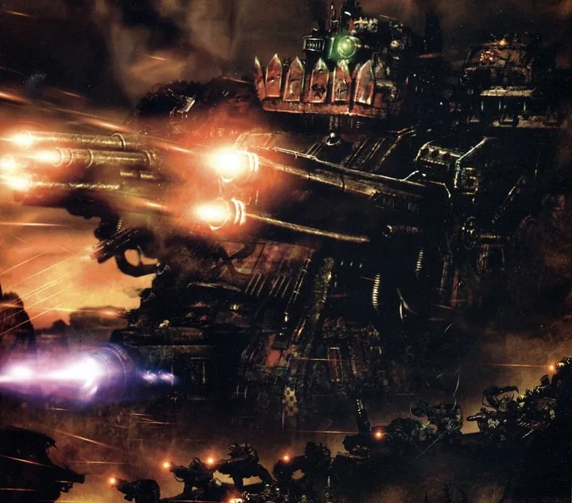
Gargant
การ์แกนต์หุ่นยักษ์รูปเทพ Gork (หรือ Mork) สร้างเป็นรูปเคารพเดินได้ ติดปืนเต็มตัว
09วีรกรรมและเหตุการณ์สำคัญ
War of the Beast
The Beast นำ Orks เกือบพิชิต Terra
สงครามแห่ง Armageddon ครั้งที่ 2 และ 3
Ghazghkull บุก Armageddon สองครั้ง ปะทะ Yarrick
ถูกตัดคอที่ Krongar
Ghazghkull ถูก Ragnar Blackmane ตัดหัว แต่ Mad Dok Grotsnik ต่อหัวเข้ากับร่างใหม่ที่ใหญ่กว่าเดิม
กลับสู่ Armageddon
Ghazghkull ใช้ Mega-tellyshokka เคลื่อนย้ายกองทัพมาบุก Armageddon อีกครั้ง — เรื่องหลักของ 11th Edition
10ตัวละครสำคัญ

Ghazghkull Mag Uruk Thraka
ศาสดาแห่ง Waaagh!Ork ที่อันตรายที่สุดในกาแล็กซี
11ยุค 40K — สหัสวรรษที่ 41
ยุค 40K Orks อยู่ทุกหนแห่งในกาแล็กซี เป็นภัยที่ใหญ่ที่สุดในแง่จำนวน
12เนื้อเรื่องล่าสุด (Era Indomitus / M42)
Ghazghkull ประกาศตัวเป็นศาสดาของ Gork และ Mork นำ Waaagh! ใหญ่ที่สุดในประวัติศาสตร์ และกลับมาบุก Armageddon อีกครั้ง ยึด Hive Acheron และ Tempestora ได้ จักรวรรดิตอบโต้ด้วย Operation Imperator ที่ Marneus Calgar เรียกรวม Chapter จำนวนมาก นำโดย Blood Angels — สงครามยังไม่จบ
หลังการเกิด Great Rift ปฏิทินของจักรวรรดิคลาดเคลื่อน เหตุการณ์ยุคปัจจุบันจึงมักระบุเพียง 'M42' ไม่มีปีที่แน่นอน
13แกลเลอรี